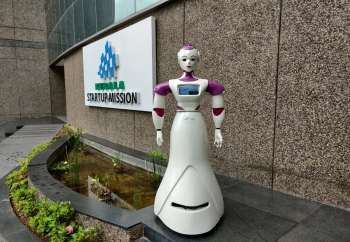
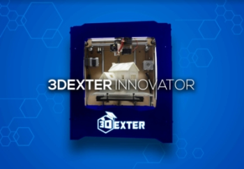
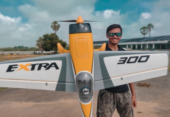

A display of the most innovative technologies from around the country, ranging from humanoid robots to high-speed drones, Tech Expo is the most eye-catching event of Abhiyantriki. Exhibits from some big names like DRDO, BARC, IMD, DAE and many more at the tech expo are sure to ignite a fire for science and technology and leave you inquisitive!
Indro 4.0

SayaBot

Matsya

3 Dexter

INDRA Flow Series

SCINTIGLO
NPCIL

Quanteon Powertrain

Dhruva Space

Pigeon Innovations

KWatt Solutions Pvt ltd

Paper-Based skin infection sensor

Team Antriksh

1 Martian
